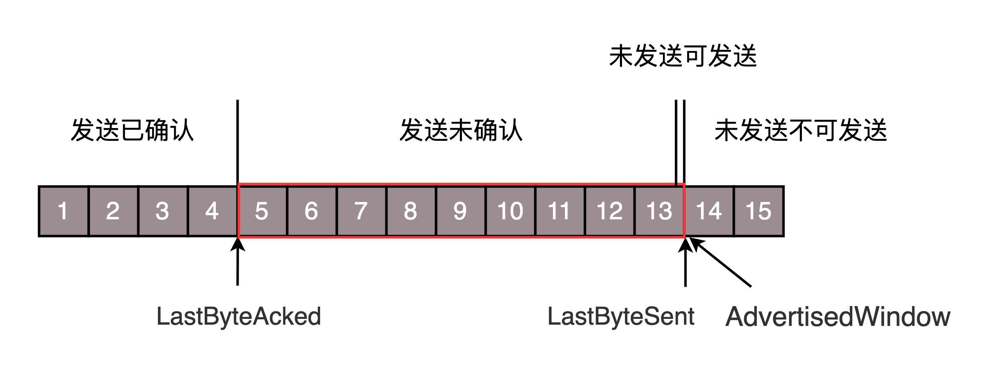
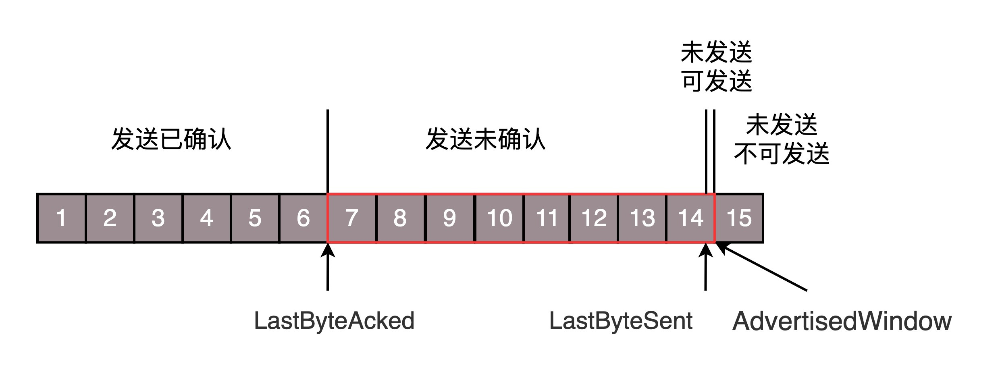

- 00 开篇词 想成为技术牛人？先搞定网络协议！.md.html
- 01 为什么要学习网络协议？.md.html
- 02 网络分层的真实含义是什么？.md.html
- 03 ifconfig：最熟悉又陌生的命令行.md.html
- 04 DHCP与PXE：IP是怎么来的，又是怎么没的？.md.html
- 05 从物理层到MAC层：如何在宿舍里自己组网玩联机游戏？.md.html
- 06 交换机与VLAN：办公室太复杂，我要回学校.md.html
- 07 ICMP与ping：投石问路的侦察兵.md.html
- 08 世界这么大，我想出网关：欧洲十国游与玄奘西行.md.html
- 09 路由协议：西出网关无故人，敢问路在何方.md.html
- 10 UDP协议：因性善而简单，难免碰到“城会玩”.md.html
- 11 TCP协议（上）：因性恶而复杂，先恶后善反轻松.md.html
- 12 TCP协议（下）：西行必定多妖孽，恒心智慧消磨难.md.html
- 13 套接字Socket：Talk is cheap, show me the code.md.html
- 14 HTTP协议：看个新闻原来这么麻烦.md.html
- 15 HTTPS协议：点外卖的过程原来这么复杂.md.html
- 16 流媒体协议：如何在直播里看到美女帅哥？.md.html
- 17 P2P协议：我下小电影，99%急死你.md.html
- 18 DNS协议：网络世界的地址簿.md.html
- 19 HttpDNS：网络世界的地址簿也会指错路.md.html
- 20 CDN：你去小卖部取过快递么？.md.html
- 21 数据中心：我是开发商，自己拿地盖别墅.md.html
- 22 VPN：朝中有人好做官.md.html
- 23 移动网络：去巴塞罗那，手机也上不了脸书.md.html
- 24 云中网络：自己拿地成本高，购买公寓更灵活.md.html
- 25 软件定义网络：共享基础设施的小区物业管理办法.md.html
- 26 云中的网络安全：虽然不是土豪，也需要基本安全和保障.md.html
- 27 云中的网络QoS：邻居疯狂下电影，我该怎么办？.md.html
- 28 云中网络的隔离GRE、VXLAN：虽然住一个小区，也要保护隐私.md.html
- 29 容器网络：来去自由的日子，不买公寓去合租.md.html
- 30 容器网络之Flannel：每人一亩三分地.md.html
- 31 容器网络之Calico：为高效说出善意的谎言.md.html
- 32 RPC协议综述：远在天边，近在眼前.md.html
- 33 基于XML的SOAP协议：不要说NBA，请说美国职业篮球联赛.md.html
- 34 基于JSON的RESTful接口协议：我不关心过程，请给我结果.md.html
- 35 二进制类RPC协议：还是叫NBA吧，总说全称多费劲.md.html
- 36 跨语言类RPC协议：交流之前，双方先来个专业术语表.md.html
- 37 知识串：用双十一的故事串起碎片的网络协议（上）.md.html
- 38 知识串：用双十一的故事串起碎片的网络协议（中）.md.html
- 39 知识串：用双十一的故事串起碎片的网络协议（下）.md.html
- 40 搭建一个网络实验环境：授人以鱼不如授人以渔.md.html
- 加餐1 创作故事：我是如何创作“趣谈网络协议”专栏的？.md.html
- 协议专栏特别福利 答疑解惑1期.md.html
- 协议专栏特别福利 答疑解惑2期.md.html
- 协议专栏特别福利 答疑解惑3期.md.html
- 协议专栏特别福利 答疑解惑4期.md.html
- 协议专栏特别福利 答疑解惑5期.md.html
- 结束语 放弃完美主义，执行力就是限时限量认真完成.md.html
- 捐赠
12 TCP协议（下）：西行必定多妖孽，恒心智慧消磨难
我们前面说到玄奘西行，要出网关。既然出了网关，那就是在公网上传输数据，公网往往是不可靠的，因而需要很多的机制去保证传输的可靠性，这里面需要恒心，也即各种重传的策略，还需要有智慧，也就是说，这里面包含着大量的算法。
如何做个靠谱的人？
TCP想成为一个成熟稳重的人，成为一个靠谱的人。那一个人怎么样才算靠谱呢？咱们工作中经常就有这样的场景，比如你交代给下属一个事情以后，下属到底能不能做到，做到什么程度，什么时候能够交付，往往就会有应答，有回复。这样，处理事情的过程中，一旦有异常，你也可以尽快知道，而不是交代完之后就石沉大海，过了一个月再问，他说，啊我不记得了。
对应到网络协议上，就是客户端每发送的一个包，服务器端都应该有个回复，如果服务器端超过一定的时间没有回复，客户端就会重新发送这个包，直到有回复。
这个发送应答的过程是什么样呢？可以是上一个收到了应答，再发送下一个。这种模式有点像两个人直接打电话，你一句，我一句。但是这种方式的缺点是效率比较低。如果一方在电话那头处理的时间比较长，这一头就要干等着，双方都没办法干其他事情。咱们在日常工作中也不是这样的，不能你交代你的下属办一件事情，就一直打着电话看着他做，而是应该他按照你的安排，先将事情记录下来，办完一件回复一件。在他办事情的过程中，你还可以同时交代新的事情，这样双方就并行了。
如果使⽤这种模式，其实需要你和你的下属就不能靠脑⼦了，⽽是要都准备⼀个本⼦，你每交代下属⼀个事情，双方的本子都要记录⼀下。
当你的下属做完⼀件事情，就回复你，做完了，你就在你的本⼦上将这个事情划去。同时你的本⼦上每件事情都有时限，如果超过了时限下属还没有回复，你就要主动重新交代⼀下：上次那件事情，你还没回复我，咋样啦？
既然多件事情可以一起处理，那就需要给每个事情编个号，防止弄错了。例如，程序员平时看任务的时候，都会看JIRA的ID，而不是每次都要描述一下具体的事情。在大部分情况下，对于事情的处理是按照顺序来的，先来的先处理，这就给应答和汇报工作带来了方便。等开周会的时候，每个程序员都可以将JIRA ID的列表拉出来，说以上的都做完了，⽽不⽤⼀个个说。
如何实现一个靠谱的协议？
TCP协议使用的也是同样的模式。为了保证顺序性，每一个包都有一个ID。在建立连接的时候，会商定起始的ID是什么，然后按照ID一个个发送。为了保证不丢包，对于发送的包都要进行应答，但是这个应答也不是一个一个来的，而是会应答某个之前的ID，表示都收到了，这种模式称为累计确认或者累计应答（cumulative acknowledgment）。
为了记录所有发送的包和接收的包，TCP也需要发送端和接收端分别都有缓存来保存这些记录。发送端的缓存里是按照包的ID一个个排列，根据处理的情况分成四个部分。
第一部分：发送了并且已经确认的。这部分就是你交代下属的，并且也做完了的，应该划掉的。
第二部分：发送了并且尚未确认的。这部分是你交代下属的，但是还没做完的，需要等待做完的回复之后，才能划掉。
第三部分：没有发送，但是已经等待发送的。这部分是你还没有交代给下属，但是马上就要交代的。
第四部分：没有发送，并且暂时还不会发送的。这部分是你还没有交代给下属，而且暂时还不会交代给下属的。
这里面为什么要区分第三部分和第四部分呢？没交代的，一下子全交代了不就完了吗？
这就是我们上一节提到的十个词口诀里的“流量控制，把握分寸”。作为项目管理人员，你应该根据以往的工作情况和这个员工反馈的能力、抗压力等，先在心中估测一下，这个人一天能做多少工作。如果工作布置少了，就会不饱和；如果工作布置多了，他就会做不完；如果你使劲逼迫，人家可能就要辞职了。
到底一个员工能够同时处理多少事情呢？在TCP里，接收端会给发送端报一个窗口的大小，叫Advertised window。这个窗口的大小应该等于上面的第二部分加上第三部分，就是已经交代了没做完的加上马上要交代的。超过这个窗口的，接收端做不过来，就不能发送了。
于是，发送端需要保持下面的数据结构。

LastByteAcked：第一部分和第二部分的分界线
LastByteSent：第二部分和第三部分的分界线
LastByteAcked + AdvertisedWindow：第三部分和第四部分的分界线
对于接收端来讲，它的缓存里记录的内容要简单一些。
第一部分：接受并且确认过的。也就是我领导交代给我，并且我做完的。
第二部分：还没接收，但是马上就能接收的。也即是我自己的能够接受的最大工作量。
第三部分：还没接收，也没法接收的。也即超过工作量的部分，实在做不完。
对应的数据结构就像这样。-
-

MaxRcvBuffer：最大缓存的量；
LastByteRead之后是已经接收了，但是还没被应用层读取的；
NextByteExpected是第一部分和第二部分的分界线。
第二部分的窗口有多大呢？
NextByteExpected和LastByteRead的差其实是还没被应用层读取的部分占用掉的MaxRcvBuffer的量，我们定义为A。
AdvertisedWindow其实是MaxRcvBuffer减去A。
也就是：AdvertisedWindow=MaxRcvBuffer-((NextByteExpected-1)-LastByteRead)。
那第二部分和第三部分的分界线在哪里呢？NextByteExpected加AdvertisedWindow就是第二部分和第三部分的分界线，其实也就是LastByteRead加上MaxRcvBuffer。
其中第二部分里面，由于受到的包可能不是顺序的，会出现空档，只有和第一部分连续的，可以马上进行回复，中间空着的部分需要等待，哪怕后面的已经来了。
顺序问题与丢包问题
接下来我们结合一个例子来看。
还是刚才的图，在发送端来看，1、2、3已经发送并确认；4、5、6、7、8、9都是发送了还没确认；10、11、12是还没发出的；13、14、15是接收方没有空间，不准备发的。
在接收端来看，1、2、3、4、5是已经完成ACK，但是没读取的；6、7是等待接收的；8、9是已经接收，但是没有ACK的。
发送端和接收端当前的状态如下：
1、2、3没有问题，双方达成了一致。
4、5接收方说ACK了，但是发送方还没收到，有可能丢了，有可能在路上。
6、7、8、9肯定都发了，但是8、9已经到了，但是6、7没到，出现了乱序，缓存着但是没办法ACK。
根据这个例子，我们可以知道，顺序问题和丢包问题都有可能发生，所以我们先来看确认与重发的机制。
假设4的确认到了，不幸的是，5的ACK丢了，6、7的数据包丢了，这该怎么办呢？
一种方法就是超时重试，也即对每一个发送了，但是没有ACK的包，都有设一个定时器，超过了一定的时间，就重新尝试。但是这个超时的时间如何评估呢？这个时间不宜过短，时间必须大于往返时间RTT，否则会引起不必要的重传。也不宜过长，这样超时时间变长，访问就变慢了。
估计往返时间，需要TCP通过采样RTT的时间，然后进行加权平均，算出一个值，而且这个值还是要不断变化的，因为网络状况不断地变化。除了采样RTT，还要采样RTT的波动范围，计算出一个估计的超时时间。由于重传时间是不断变化的，我们称为自适应重传算法（Adaptive Retransmission Algorithm）。
如果过一段时间，5、6、7都超时了，就会重新发送。接收方发现5原来接收过，于是丢弃5；6收到了，发送ACK，要求下一个是7，7不幸又丢了。当7再次超时的时候，有需要重传的时候，TCP的策略是超时间隔加倍。每当遇到一次超时重传的时候，都会将下一次超时时间间隔设为先前值的两倍。两次超时，就说明网络环境差，不宜频繁反复发送。
超时触发重传存在的问题是，超时周期可能相对较长。那是不是可以有更快的方式呢？
有一个可以快速重传的机制，当接收方收到一个序号大于下一个所期望的报文段时，就会检测到数据流中的一个间隔，于是它就会发送冗余的ACK，仍然ACK的是期望接收的报文段。而当客户端收到三个冗余的ACK后，就会在定时器过期之前，重传丢失的报文段。
例如，接收方发现6收到了，8也收到了，但是7还没来，那肯定是丢了，于是发送6的ACK，要求下一个是7。接下来，收到后续的包，仍然发送6的ACK，要求下一个是7。当客户端收到3个重复ACK，就会发现7的确丢了，不等超时，马上重发。
还有一种方式称为Selective Acknowledgment （SACK）。这种方式需要在TCP头里加一个SACK的东西，可以将缓存的地图发送给发送方。例如可以发送ACK6、SACK8、SACK9，有了地图，发送方一下子就能看出来是7丢了。
流量控制问题
我们再来看流量控制机制，在对于包的确认中，同时会携带一个窗口的大小。
我们先假设窗口不变的情况，窗口始终为9。4的确认来的时候，会右移一个，这个时候第13个包也可以发送了。

这个时候，假设发送端发送过猛，会将第三部分的10、11、12、13全部发送完毕，之后就停止发送了，未发送可发送部分为0。

当对于包5的确认到达的时候，在客户端相当于窗口再滑动了一格，这个时候，才可以有更多的包可以发送了，例如第14个包才可以发送。

如果接收方实在处理的太慢，导致缓存中没有空间了，可以通过确认信息修改窗口的大小，甚至可以设置为0，则发送方将暂时停止发送。
我们假设一个极端情况，接收端的应用一直不读取缓存中的数据，当数据包6确认后，窗口大小就不能再是9了，就要缩小一个变为8。

这个新的窗口8通过6的确认消息到达发送端的时候，你会发现窗口没有平行右移，而是仅仅左面的边右移了，窗口的大小从9改成了8。

如果接收端还是一直不处理数据，则随着确认的包越来越多，窗口越来越小，直到为0。
当这个窗口通过包14的确认到达发送端的时候，发送端的窗口也调整为0，停止发送。
 -
如果这样的话，发送方会定时发送窗口探测数据包，看是否有机会调整窗口的大小。当接收方比较慢的时候，要防止低能窗口综合征，别空出一个字节来就赶快告诉发送方，然后马上又填满了，可以当窗口太小的时候，不更新窗口，直到达到一定大小，或者缓冲区一半为空，才更新窗口。
-
如果这样的话，发送方会定时发送窗口探测数据包，看是否有机会调整窗口的大小。当接收方比较慢的时候，要防止低能窗口综合征，别空出一个字节来就赶快告诉发送方，然后马上又填满了，可以当窗口太小的时候，不更新窗口，直到达到一定大小，或者缓冲区一半为空，才更新窗口。
这就是我们常说的流量控制。
拥塞控制问题
最后，我们看一下拥塞控制的问题，也是通过窗口的大小来控制的，前面的滑动窗口rwnd是怕发送方把接收方缓存塞满，而拥塞窗口cwnd，是怕把网络塞满。
这里有一个公式 LastByteSent - LastByteAcked <= min {cwnd, rwnd} ，是拥塞窗口和滑动窗口共同控制发送的速度。
那发送方怎么判断网络是不是慢呢？这其实是个挺难的事情，因为对于TCP协议来讲，他压根不知道整个网络路径都会经历什么，对他来讲就是一个黑盒。TCP发送包常被比喻为往一个水管里面灌水，而TCP的拥塞控制就是在不堵塞，不丢包的情况下，尽量发挥带宽。
水管有粗细，网络有带宽，也即每秒钟能够发送多少数据；水管有长度，端到端有时延。在理想状态下，水管里面水的量=水管粗细 x 水管长度。对于到网络上，通道的容量 = 带宽 × 往返延迟。
如果我们设置发送窗口，使得发送但未确认的包为为通道的容量，就能够撑满整个管道。
 -
如图所示，假设往返时间为8s，去4s，回4s，每秒发送一个包，每个包1024byte。已经过去了8s，则8个包都发出去了，其中前4个包已经到达接收端，但是ACK还没有返回，不能算发送成功。5-8后四个包还在路上，还没被接收。这个时候，整个管道正好撑满，在发送端，已发送未确认的为8个包，正好等于带宽，也即每秒发送1个包，乘以来回时间8s。
-
如图所示，假设往返时间为8s，去4s，回4s，每秒发送一个包，每个包1024byte。已经过去了8s，则8个包都发出去了，其中前4个包已经到达接收端，但是ACK还没有返回，不能算发送成功。5-8后四个包还在路上，还没被接收。这个时候，整个管道正好撑满，在发送端，已发送未确认的为8个包，正好等于带宽，也即每秒发送1个包，乘以来回时间8s。
如果我们在这个基础上再调大窗口，使得单位时间内更多的包可以发送，会出现什么现象呢？
我们来想，原来发送一个包，从一端到达另一端，假设一共经过四个设备，每个设备处理一个包时间耗费1s，所以到达另一端需要耗费4s，如果发送的更加快速，则单位时间内，会有更多的包到达这些中间设备，这些设备还是只能每秒处理一个包的话，多出来的包就会被丢弃，这是我们不想看到的。
这个时候，我们可以想其他的办法，例如这个四个设备本来每秒处理一个包，但是我们在这些设备上加缓存，处理不过来的在队列里面排着，这样包就不会丢失，但是缺点是会增加时延，这个缓存的包，4s肯定到达不了接收端了，如果时延达到一定程度，就会超时重传，也是我们不想看到的。
于是TCP的拥塞控制主要来避免两种现象，包丢失和超时重传。一旦出现了这些现象就说明，发送速度太快了，要慢一点。但是一开始我怎么知道速度多快呢，我怎么知道应该把窗口调整到多大呢？
如果我们通过漏斗往瓶子里灌水，我们就知道，不能一桶水一下子倒进去，肯定会溅出来，要一开始慢慢的倒，然后发现总能够倒进去，就可以越倒越快。这叫作慢启动。
一条TCP连接开始，cwnd设置为一个报文段，一次只能发送一个；当收到这一个确认的时候，cwnd加一，于是一次能够发送两个；当这两个的确认到来的时候，每个确认cwnd加一，两个确认cwnd加二，于是一次能够发送四个；当这四个的确认到来的时候，每个确认cwnd加一，四个确认cwnd加四，于是一次能够发送八个。可以看出这是指数性的增长。
涨到什么时候是个头呢？有一个值ssthresh为65535个字节，当超过这个值的时候，就要小心一点了，不能倒这么快了，可能快满了，再慢下来。
每收到一个确认后，cwnd增加1/cwnd，我们接着上面的过程来，一次发送八个，当八个确认到来的时候，每个确认增加1/8，八个确认一共cwnd增加1，于是一次能够发送九个，变成了线性增长。
但是线性增长还是增长，还是越来越多，直到有一天，水满则溢，出现了拥塞，这时候一般就会一下子降低倒水的速度，等待溢出的水慢慢渗下去。
拥塞的一种表现形式是丢包，需要超时重传，这个时候，将sshresh设为cwnd/2，将cwnd设为1，重新开始慢启动。这真是一旦超时重传，马上回到解放前。但是这种方式太激进了，将一个高速的传输速度一下子停了下来，会造成网络卡顿。
前面我们讲过快速重传算法。当接收端发现丢了一个中间包的时候，发送三次前一个包的ACK，于是发送端就会快速地重传，不必等待超时再重传。TCP认为这种情况不严重，因为大部分没丢，只丢了一小部分，cwnd减半为cwnd/2，然后sshthresh = cwnd，当三个包返回的时候，cwnd = sshthresh + 3，也就是没有一夜回到解放前，而是还在比较高的值，呈线性增长。
就像前面说的一样，正是这种知进退，使得时延很重要的情况下，反而降低了速度。但是如果你仔细想一下，TCP的拥塞控制主要来避免的两个现象都是有问题的。
第一个问题是丢包并不代表着通道满了，也可能是管子本来就漏水。例如公网上带宽不满也会丢包，这个时候就认为拥塞了，退缩了，其实是不对的。
第二个问题是TCP的拥塞控制要等到将中间设备都填充满了，才发生丢包，从而降低速度，这时候已经晚了。其实TCP只要填满管道就可以了，不应该接着填，直到连缓存也填满。
为了优化这两个问题，后来有了TCP BBR拥塞算法。它企图找到一个平衡点，就是通过不断地加快发送速度，将管道填满，但是不要填满中间设备的缓存，因为这样时延会增加，在这个平衡点可以很好的达到高带宽和低时延的平衡。

小结
好了，这一节我们就到这里，总结一下：
顺序问题、丢包问题、流量控制都是通过滑动窗口来解决的，这其实就相当于你领导和你的工作备忘录，布置过的工作要有编号，干完了有反馈，活不能派太多，也不能太少；
拥塞控制是通过拥塞窗口来解决的，相当于往管道里面倒水，快了容易溢出，慢了浪费带宽，要摸着石头过河，找到最优值。
最后留两个思考题：
TCP的BBR听起来很牛，你知道他是如何达到这个最优点的嘛？
学会了UDP和TCP，你知道如何基于这两种协议写程序吗？这样的程序会有什么坑呢？
欢迎你留言和我讨论。趣谈网络协议，我们下期见！
© 2019 - 2023 Liangliang Lee. Powered by gin and hexo-theme-book.